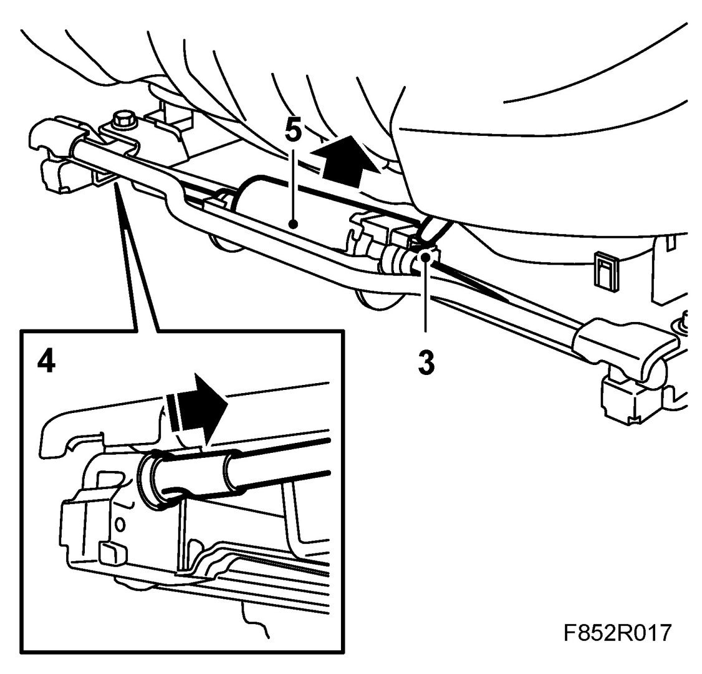
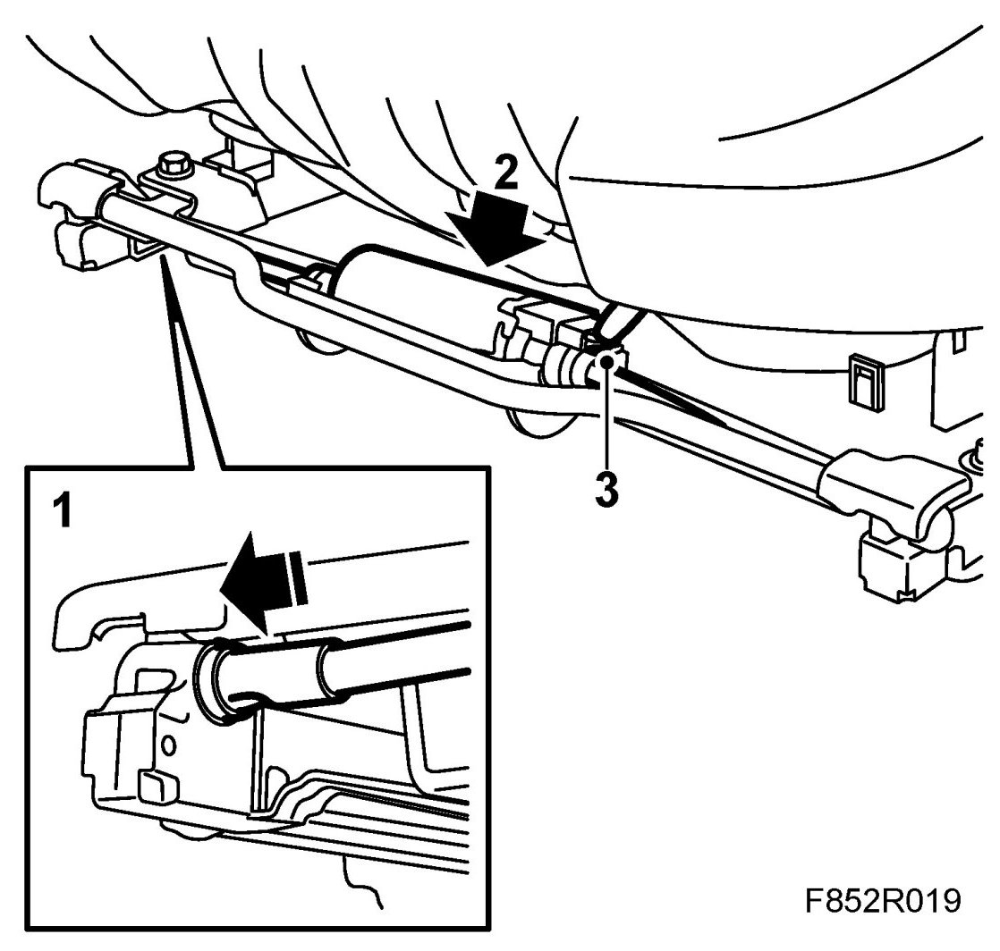
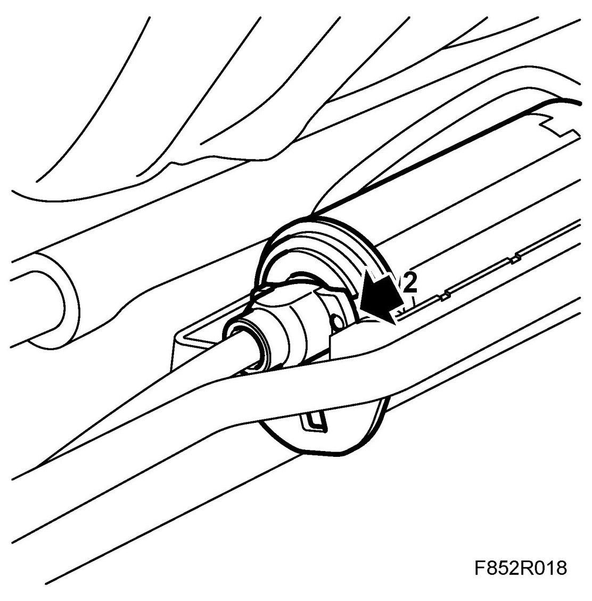

Legroom Adjustment Motor
Legroom Adjustment Motor
Removing
1. Raise the front and rear of the seat for better accessibility.
2. Remove the front seat cowl.
3. Unplug the motor.

4. Remove the wires.
5. Remove the motor by pressing it up and out of its rubber bracket.
Fitting
1. Fit the wires into the holes.

2. Fit the motor into its rubber bracket. Make sure that the gaiter comes inside the motor bracket.

3. Plug in the motor.
4. Fit the front seat cowl.
5. Test run the legroom adjustment motor.